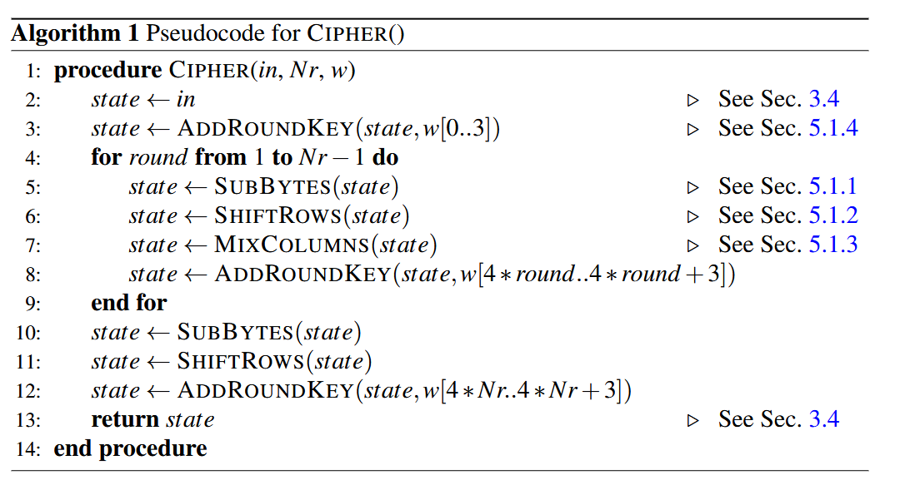
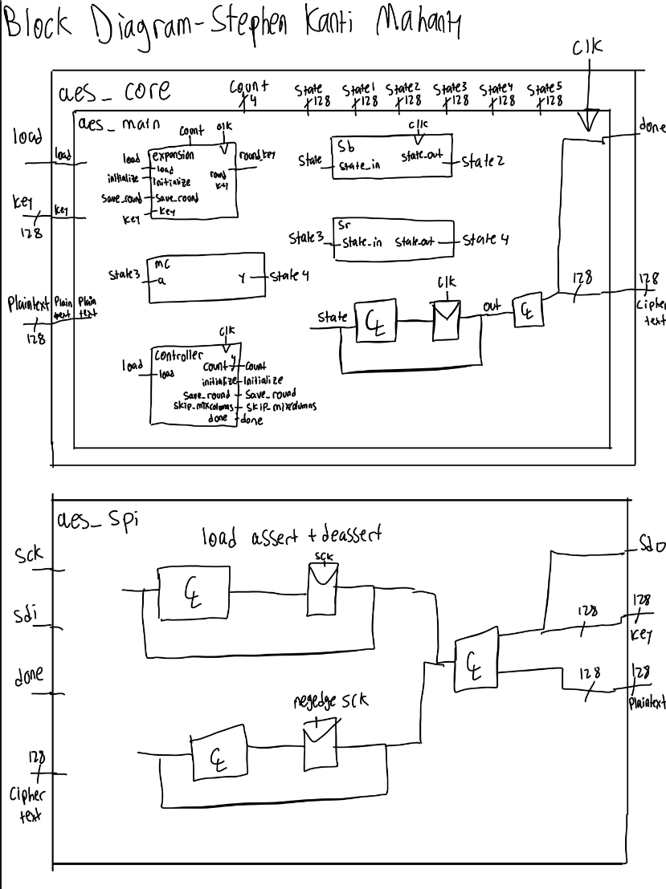
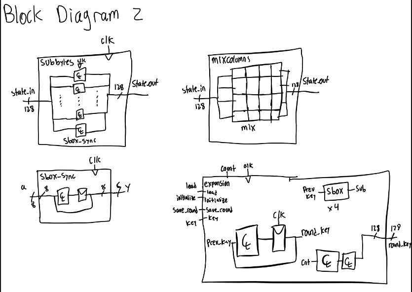
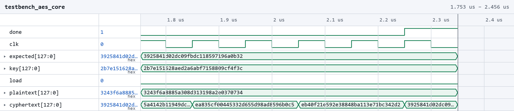
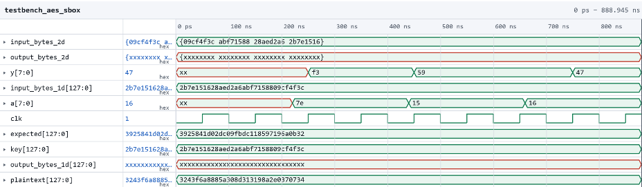
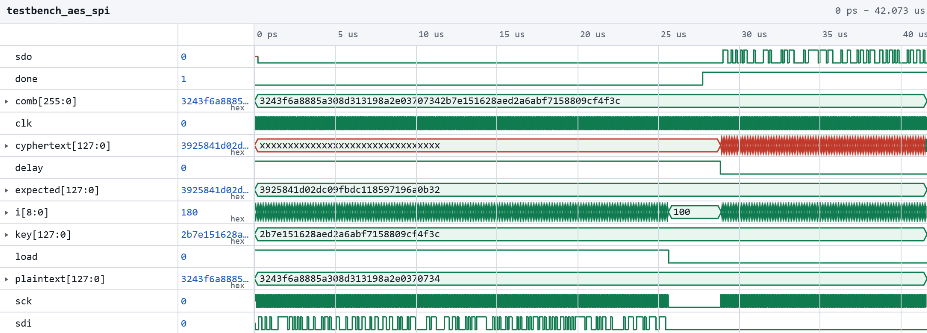

Lab 7
The following is the lab report for lab 7 for Stephen Kanti Mahanty.
Introduction
Implementing the advanced encryption standard on an FPGA.
In this lab, a design was implemented on the FPGA to implement the Advanced Encryption Standard (AES) in order to cipher text. There was also SPI interfacing with the MCU which allowed for proper connection between the two objects and serves a useful purpose for the project.
Design and Testing Methodology
Explaining how I approached the design of this assignment from both a software and a hardware standpoint (as appropriate). Include how I tested the design.
Most the design required reading the AES datasheet and understanding how it worked. At the start, the value goes through three separate functions before entering a loop. After the loop, there is some more manipulation to further change the value as a cipher. The loop and the main process is described in the image below:
Click to reveal workflow

To implement this, there were 2 FSMs: one that controlled what stage the state was in and one that controlled what function the state goes into next. This was relatively simple and was just an interconnecting FSM.
Technical Documentation:
Includes the link to a Git repository with the Verilog code, an oscilloscope reading, and schematics of the circuits.
The source code for the project can be found in the associated Github repository.
Block Diagram
Click to reveal block diagram

Figure 2 shows the main overarching block diagram of the design.
Click to reveal block diagram

Figure 3 shows the block diagram of all the internal workings of the code.
Testbenches
Click to reveal testbench

Figure 4 shows the testbench for the AES Core Module.
Click to reveal testbench

Figure 5 shows the testbench for the AES SBox Module
Click to reveal testbench

Figure 6 shows the testbench for the AES SPI Module.
Results and Discussion
Did you accomplish all of the prescribed tasks? If not, what are the shortcomings? How might you address them given more time? As appropriate, how did the design perform (e.g., How fast/accurate/reliable was it?).
I did accomplish all of the prescribed tasks. The design successfully converted one number to another using the AES. All of the tasks are done, but there is no logic analyzer traces yet, as those are tasks I plan to do later. If given more time, I think that I would add more to the AES that is in the datasheet, as there is inverse ciphers and other parts of the lab that seem interesting that currently is not there.
I think that the design is accurate and reliable because I could easily interface with the code and change the number of rounds as needed, but I would need to modify the sbox as well.
Conclusion
Briefly summarize what was done and how it performed. Also note how many hours you spent working on the lab.
The design successfully converted one key to another using AES. I spent a total of fifteen (I think) hours working on this lab.
AI Prototype Summary
I asked Google’s Gemini’s flash. It gave out the following:
Click to reveal AI Summary 1
The key expansion algorithm for AES generates round keys derived from an input cipher key using word-level operations, cyclic byte shifts (RotWord), S-box substitutions (SubWord), and XOR operations with round constants (Rcon).
Below is a pure combinational SystemVerilog module that implements one iteration of the AES key expansion step, matching the specification in Section 5.2 of FIPS-197. It computes the next 128-bit round key given the current 128-bit round key and the 1-indexed round number (1 to 10).
SystemVerilog Implementation
// Purely combinational KeyExpansion module for AES-128 (Nk = 4)
module aes_key_expansion_128 (
input logic [127:0] key_in, // 128-bit previous round key [w0, w1, w2, w3]
input logic [3:0] round_num, // Round number (1 through 10)
output logic [127:0] key_out // 128-bit next round key [w4, w5, w6, w7]
);
// Split previous key into four 32-bit words
// Note: Most Significant Bytes correspond to earlier words in standard notation
logic [31:0] w0, w1, w2, w3;
assign w0 = key_in[127:96];
assign w1 = key_in[95:64];
assign w2 = key_in[63:32];
assign w3 = key_in[31:0];
// Module interface declarations assumed for RotWord and SubWord
logic [31:0] rot_w3;
logic [31:0] sub_rot_w3;
logic [31:0] rcon_word;
logic [31:0] temp;
// 1. RotWord: Cyclic left shift of bytes [a0, a1, a2, a3] -> [a1, a2, a3, a0]
// Instantiated or called as external module
RotWord u_rotword (
.in (w3),
.out (rot_w3)
);
// 2. SubWord: Applies S-box substitution to each byte of the word
SubWord u_subword (
.in (rot_w3),
.out (sub_rot_w3)
);
// 3. Round Constant (Rcon) look-up table for the top byte [Rcon[i], 00, 00, 00]
always_comb begin
case (round_num)
4'd1: rcon_word = 32'h01_00_00_00;
4'd2: rcon_word = 32'h02_00_00_00;
4'd3: rcon_word = 32'h04_00_00_00;
4'd4: rcon_word = 32'h08_00_00_00;
4'd5: rcon_word = 32'h10_00_00_00;
4'd6: rcon_word = 32'h20_00_00_00;
4'd7: rcon_word = 32'h40_00_00_00;
4'd8: rcon_word = 32'h80_00_00_00;
4'd9: rcon_word = 32'h1B_00_00_00;
4'd10: rcon_word = 32'h36_00_00_00;
default: rcon_word = 32'h00_00_00_00;
endcase
end
// 4. Transform temp word: temp = SubWord(RotWord(w3)) ^ Rcon
assign temp = sub_rot_w3 ^ rcon_word;
// 5. Compute new 4 words using recursive XOR operations
logic [31:0] w4, w5, w6, w7;
assign w4 = w0 ^ temp;
assign w5 = w1 ^ w4;
assign w6 = w2 ^ w5;
assign w7 = w3 ^ w6;
// Concatenate resulting 32-bit words into 128-bit key output
assign key_out = {w4, w5, w6, w7};
endmoduleFunctional Design Notes
Combinational Cascade: The standard specifies that word \(w_i\) relies on \(w_{i-1}\) and \(w_{i-4}\). Because all four words of a round key are calculated in parallel within a single stage, \(w_4\) through \(w_7\) are chained via combinational XOR gates (\(w_5 = w_1 \oplus w_4\), etc.).
Key Size & Parameters: The code above targets AES-128 (\(N_k = 4\)). For AES-256 (\(N_k = 8\)), an additional conditional
SubWordstep withoutRotWordis applied on intermediate words.
Click to reveal AI Summary 2
Here is the SystemVerilog HDL implementation based directly on your provided pseudocode.
Since hardware loops in SystemVerilog must be completely unrolled into a parallel combinational layout (or flattened into explicit assignment steps across array indices), the implementation unwraps the sequential algorithm into combinational logic using parameters \(Nk\) and \(Nr\).
module key_expansion #(
parameter int Nk = 4, // Key length in 32-bit words (e.g., 4, 6, 8)
parameter int Nr = 10, // Number of rounds (e.g., 10, 12, 14)
parameter bit [31:0] Rcon [1:(4*(Nr+1)/Nk)] = '{default: 32'h0} // Round constant array
)(
input logic [32*Nk-1:0] key,
output logic [31:0] w [0:4*Nr+3]
);
// Dynamic signals for the unrolled temporary values
logic [31:0] temp [Nk : 4*Nr+3];
logic [31:0] mod2_out [Nk : 4*Nr+3];
logic [31:0] mod1_in [Nk : 4*Nr+3];
logic [31:0] mod1_out [Nk : 4*Nr+3];
// ------------------------------------------------------------------------
// Loop 1 Unrolled: Initial key loading into w[0] to w[Nk-1]
// Pseudocode: w[i] <- key[4*i .. 4*i+3]
// ------------------------------------------------------------------------
genvar i_init;
generate
for (i_init = 0; i_init < Nk; i_init++) begin : gen_initial_key
// Slice key in 32-bit byte-aligned chunks
assign w[i_init] = key[32*i_init +: 32];
end
endgenerate
// ------------------------------------------------------------------------
// Loop 2 Unrolled: Generate w[Nk] up to w[4*Nr + 3]
// ------------------------------------------------------------------------
genvar i;
generate
for (i = Nk; i <= 4 * Nr + 3; i++) begin : gen_key_expansion
// Step 1: Base temporary value assignment (temp <- w[i-1])
// branch condition handling via generate conditional blocks:
if (i % Nk == 0) begin : branch_mod_nk_zero
// Condition: temp <- module1(module2(temp)) (+) Rcon[i/Nk]
assign mod2_out[i] = w[i-1];
module2 u_module2 (
.in (mod2_out[i]),
.out (mod1_in[i])
);
module1 u_module1 (
.in (mod1_in[i]),
.out (mod1_out[i])
);
assign temp[i] = mod1_out[i] ^ Rcon[i / Nk];
end else if ((Nk > 6) && (i % Nk == 4)) begin : branch_nk_gt_6_mod_4
// Condition: temp <- module1(temp)
assign mod1_in[i] = w[i-1];
module1 u_module1 (
.in (mod1_in[i]),
.out (mod1_out[i])
);
assign temp[i] = mod1_out[i];
end else begin : branch_default
// Default: temp remains w[i-1]
assign temp[i] = w[i-1];
end
// Step 2: Final assignment per iteration (w[i] <- w[i-Nk] (+) temp)
assign w[i] = w[i - Nk] ^ temp[i];
end
endgenerate
endmoduleModule Interface Assumptions
To connect cleanly to your environment, module1 and module2 are assumed to have standard 32-bit input/output ports:
module module1 (input logic [31:0] in, output logic [31:0] out);
module module2 (input logic [31:0] in, output logic [31:0] out);I think the quality of the output from the LLM was alright. One interesting thing is that the AI output is similar for both models without having the context of AES. It might be because I am using the fast version and it auto-generates a response and might not read the PDF. This could be because I was using the faster Flash model, which might have relied more on recognizing common coding patterns rather than carefully interpreting the PDF and pseudocode I provided. However, both responses seemed to understand the general structure of the algorithm and translated it into reasonable SystemVerilog.
In the future, I would probably use an LLM more as a starting point rather than expecting it to generate a complete solution. I would also provide more specific instructions about the module interfaces, hardware architecture, and SystemVerilog constructs I wanted it to use. Instead of asking it to generate the entire algorithm at once, I think it is more useful to break the problem into smaller components and verify each one independently. Overall, the LLM was helpful for understanding how to translate an algorithm into hardware, but I would not trust its output.